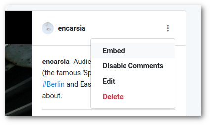

Embed Pixelfed posts (with Nikola)
| Anke (encarsia)
Pixelwhat?
Pixelfed is the photo sharing platform of the fediverse. The FOSS version of Instagram so to speak.
Recently I stumbled over the option to embed posts. You can generate the code via the post's centext menu. I discovered that embedding posts work even if this context menu is not available.
Shortcode for Nikola
The approach for creating and using a custom shortcode for Pixelfed corresponds basically to embedding Mastodon toots which I have already written a pretty informative blog post about.
How to use
Save the pixelfed.tmpl file in the shortcode folder of your Nikola site.
You can use the shortcode with reStructuredText and Markdown markup.
What's hot & what's not
As stated before Pixelfed is in an early stage of development and not everything works flawlessly.
Embedding... |
Status |
|---|---|
single photo post |
works |
album post |
|
animated GIF |
works |
video |
works |
profile |
works |
collection |
does not work yet |
hashtag |
does not work yet |
This is my profile.
I post pictures of small things.
Alm posts pictures of cats.
Sven (esureL) posts pictures of painted distribution boxes (and food).
Keep moving.
Soon to come
The main developer has stated that everything that is not working will do so in the near future.
This points to an album post.
This points to a collection.
This points to a hashtag.
Comments
Comments powered by Disqus